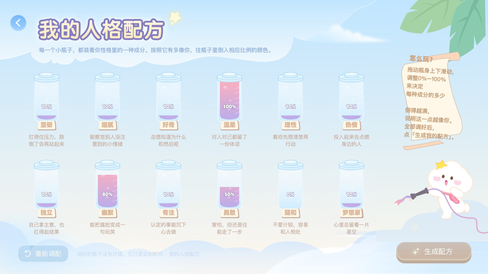

补充证据 02 · 体验设计
把 IP 插画交付为
可运行的体验
心理剧场 · 202610 月刊阶段交付。以已批准并集成的「人格配方」详情页动效为完成单元，展示从体验判断、AI 协作制作到离线 H5 与开发交接的闭环。
详情动效已批准并集成月刊整体进行中 · 目标 Pad 待实机
01 / 场景与我的工作
让心理成长内容更容易进入，也更容易交接
心理剧场在 Android Pad 中承载「认识我—接纳我—绽放我」主题内容。页面需要保留温暖、陪伴的 IP 视觉，同时让用户自然进入内容、表达评分，并在离线环境中保持画面与操作连续。
我的工作包括体验与动效方案判断、反馈迭代、AI 协作制作、H5 交互实现和交付规范沉淀。AI 参与源稿结构分析、资源拆分、动画与页面制作、检查和打包；角色身份、叙事顺序、主次节奏与确认门槛由设计判断把关。

02 / 一个已完成的交付单元
「人格配方」：确认、发布、集成、检查都有记录
详情页用 12 个可拖动的性格瓶承接自我表达。独立角色动效呈现「沿软管抽水 → 喷流伸展 → 水滴飞出 → 人物回应」的 5 秒故事，使动作关系可读，并保持原 IP 五官与构图。

| 步骤 | 已完成证据 | 解决的问题 |
|---|---|---|
| 方案确认 | 用户确认白色发光点阵候选；2026.09.23 发布记录记载批准状态。 | 在视觉与叙事确认后，再收口正式资源。 |
| 正式交付 | 单文件 JSON、接入说明、发布记录和独立 ZIP；545 × 318 px、30 fps、5 秒循环。 | 图片已内嵌，开发接入不依赖网络或外部图片目录。 |
| H5 集成 | 发布记录登记 page1.1；页面 JSON 与正式文件一致，离线数据同步，静态回退可用。 | 正式资源与实际页面引用对齐，独立详情资源不覆盖主入口版本。 |
| 交互检查 | 12 瓶数据、真实拖动百分比反馈、生成事件、进入与返回路径有桌面检查记录。 | 从可观看的动画，落到用户可操作、开发可接入的页面。 |
查看详情资源的 QA 指标与规格
质量门槛有明确对象。交付 QA 记录显示：5/5 SVG 特效项完成对账，守住原稿柔光与蒙版；18/18 简单动画属性首尾闭合，避免循环跳变；1× / 2× 边缘检查无黑线或裁切。正式 JSON 为 70,969 bytes，8 张紧裁图片共 130,027 px。
来源：《enter1.3_详情页发布记录》《enter1.3_详情页 QA》《page1.1 集成检查》，2026.09.23。
03 / 工作流变化与交付效率
设计投入相近，交给研发的内容更完整
以心理剧场同类月刊内容为比较范围，我将 AI 草稿探索、人工手绘、Lottie 制作、HTML 实现与交付检查串成一条流程。交付从静态素材扩展为可运行的体验，让研发能在已有画面、操作和动效上完成生产接入。
| 对比项 | 原有方式 | AI 协作后的方式 |
|---|---|---|
| 我的工作 | 纯手绘、切图，交给前端实现。 | AI 草稿、人工手绘、Lottie 和可运行 HTML，以及交付检查。 |
| 设计侧投入 | 通常约 1.5 周。 | 全部设计侧交付约 1～1.5 周。 |
| 研发承接 | 静态素材之后的页面与交互实现。 | 重点承接生产环境适配、真实资源和业务接入；仍需目标环境验收。 |
| 整体周期变化 | 按本人实际交付经验估算，月刊每期整体约节省 1 周，主要来自后续开发时间减少。 | |
| 质量依据 | 共同目标是保留设计画面与可操作体验；新交付已有原稿与特效对账、热区和事件检查、离线完整性、正式资源一致性及桌面路径验证。旧方式的同口径检查记录未齐，不据此宣称质量提升百分比。 | |
我还主动推进适配模式模板化。历史材料中已形成按宽度缩放、按高度缩放的试跑 HTML；当前与研发明确为固定 1920×1080 画布交付，宿主与外壳适配由前端统一处理。模板沉淀覆盖坐标、热区、事件接口、资源回退与离线包，支持后续页面按同一规则生产和接入。
半量化口径：时间为本人回顾估算，比较的是同类月刊交付经验，未提供逐期页数、工时和旧开发绝对时长。“约省 1 周”直接采用本人确认，未倒推完整旧/新周期或节省比例，也未换算成人日。单期排期、同范围质量对照与研发接受记录可作为补强旁证。
来源：本人于 2026.10.13 的两次确认；历史按宽度 / 按高度适配 HTML；《心理剧场 H5 页面交付标准》（2026.09.17）、《H5 交接说明》《交互与接入说明》。
04 / 资源优化与证据口径
减少无效图片成本，同时守住原稿表现
早期局部元素被保存为整画布 PNG，透明区域也增加图片解码成本。我与 AI 将适合的原 SVG 元素转为 Shape；对内阴影、渐变齿轮、柔光星保留紧裁 PNG。随后复核关键姿态、循环、边缘和原稿效果，避免资源优化改变已确认的设计。
| 对象 | 优化结果 | 证据范围 |
|---|---|---|
| enter1.1 | 22 张整画布 PNG → 22 个 Shape Layer；图片资源为 0。gzip 约 111 KB → 约 63 KB。 | 前后体积来自 2026.09.18 工作记录。2026.10.13 只读核对现文件：22 个 Shape、0 张图片，gzip 为 62,145 bytes。 |
| enter2.1 / 2.2 / 2.4 | 57 张整画布 PNG → 52 个 Shape Layer ＋ 5 张紧裁效果图。 | 2026.09.18 记录与三份接入说明相互对应；本次只读核对现文件仍为 20 / 12 / 20 个 Shape 与 1 / 2 / 2 张图片。 |
| 理论纹理成本 | 上述三份资源的理论图片解码纹理分别减少约 99.84% / 99.70% / 99.77%。 | 采用 2026.09.18 工作记录口径；尚未找齐优化前原始对比报告，未作为本次重新测得的前后结果。 |
这些数字描述图片资源成本。理论 RGBA 图片解码量按图片总像素 × 4 bytes 估算，不代表应用总内存或实机峰值。gzip 比较描述文件压缩体积；图片资源优化不等于真实 Pad 内存、FPS 或人员效率提升。
查看本次只读核对口径
核对日期为 2026.10.13。计数包含根合成与预合成中的 Shape 图层；图片像素按 JSON 图片资源声明的宽 × 高相加。gzip 使用当前文件和压缩级别 9；历史近似值沿用原记录，压缩条件可能不同。
当前 enter2.1 / 2.2 / 2.4 图片总像素分别为 5,082 / 10,415 / 9,925 px。正式详情页当前文件与发布记录一致。所有核对均未修改原始资源。
来源：《2026-09-18 每日记录》《IP 动态 Lottie 证据台账》及对应 Android 接入说明；现资源只读核对，2026.10.13。
05 / 跨岗位闭环与复用
把一次制作变成可重复执行的交付方式
我将设计、动效、H5 与 Android 的交接要求固化为版本记录、接口说明、坐标标注与质量门槛，并沉淀通用 IP Lottie 方法和月刊统筹、Enter 制作、H5 交付三类专项流程。
| 问题 | 落地方式 | 可复用价值 |
|---|---|---|
| 翻页白闪与误触 | 目标画面准备好后执行约 420 ms 页内滑动；切换后释放旧播放器，滑动与业务点击互斥。 | 桌面记录覆盖慢资源、快速连点、宿主取消、历史返回与离线翻页。 |
| 触区难以交接 | 入口与整组评分独立，交付真实坐标和可关闭、可删除的标注层。 | 开发可核对触区与事件；业务不依赖标注脚本。 |
| 候选被误当正式版 | 候选 → 确认 → 正式发布 → HTML 集成 → 封版；版本、哈希与清单共同核对。 | 资源发布与下游集成各自确认，避免多窗口覆盖与旧引用残留。 |
| 重复试错 | 维护特效对账、资源审查、循环与动态边界检查、证据台账和 Skill。 | 已在同项目多个素材中复验；形成供后续项目复用的执行材料。 |
完成范围：本页证明已批准详情资源的正式交付、H5 集成与桌面检查，以及已有资源优化和方法沉淀。每期约省 1 周为本人对同类月刊交付的经验估算。202610 月刊整体仍在进行中；目标 Android Pad / WebView 实机验收、部分业务接入和统一封版待完成。团队实际复用人数与上线效果尚无验证数据。
查看本页来源与日期
- 《心理剧场 202610 交付清单》：当前状态与封版待办；核对于 2026.10.13。
- 《固定画布 H5 交付说明》《当前交付验收记录》：2026.09.20 页面更新及桌面验收范围。
- 《enter1.3_详情页发布记录》《enter1.3_详情页 QA》《page1.1 集成检查》：2026.09.23 正式批准、质量与页面集成。
- 《2026-09-18 每日记录》《IP 动态 Lottie 证据台账》：资源优化前后数据及方法成熟度。
- 《enter1.1 / enter2.1 / enter2.2 / enter2.4 Android 接入说明》：资源结构、开发接入与验收要求。
- 《平滑翻页检查》《异常恢复检查》：桌面浏览器、触摸事件模拟与离线验证，目标实机未验。
- 《心理剧场月刊交付总则》《IP 动态 Lottie 执行》：版本状态、协作职责、特效与资源质量门槛。
- 本人于 2026.10.13 确认：原有职责与 1.5 周设计基线、新流程全部设计交付 1～1.5 周、每期整体大概省 1 周及适配模板推进。
- 历史按宽度 / 按高度适配 HTML：适配试跑；《心理剧场 H5 页面交付标准》：2026.09.17 固定画布与宿主分工；不作为全尺寸验收证明。